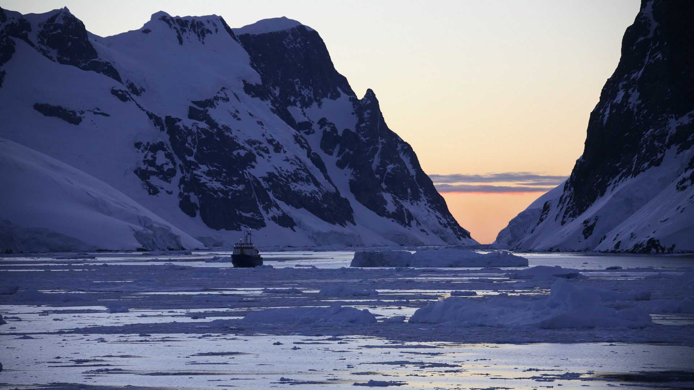
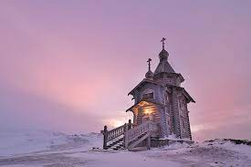

One of the best places in Antarctica, the Drake Passage is home to the roughest seas in the world. It is here in Drake Passage where the Atlantic Ocean and Pacific Ocean converge with the Southern seas. This wide stretch of water between Antarctica and South America is full of adventure, adrenaline and dread. You are sure to experience the fear in your stomach from excitement, in addition to the choppy waves, huge gales of water and more. The Drake Passage is also a great place for albatross sightings in Antarctica.
2. Lemaire Channel

The Lemaire Channel is one of the highlights of Antarctica, known for its imposing scenery and eerily still waters. The area is extremely photogenic, earning it the humorous nickname of the "Kodak Gap." Its spectacular scenery and calm, mirror-like waters make it an ideal location for tourists. Unlike other parts of the region, which can be hard to navigate due to high winds, colossal amounts of ice, and glacial subzero temperatures, the Lemaire Channel is relatively mild and temperate. The Lemaire Channel in Antarctica lies between the Kiev Peninsula in Graham Land and Booth Island. On a map, it is located directly below the tip of Argentina, where most heading to the channel depart from. Despite being one of the most majestic and impressive places in Antarctica, the channel is only 6.8 miles long . However, its raw beauty and diverse wildlife remain unmatched on the continent. The landscapes surrounding the channel are unbelievable. Snowcapped cliffs jut out over pristine waters, and rugged mountain peaks soar into the sky. The serene waters act like a mirror, reflecting the towering landscapes in the channel below, adding to the grandeur of one of Antarctica’s wonders. Despite being in the extreme north of the continent, the channel is prone to icebergs, which float serenely by as visitors admire the natural beauty of the surroundings.
3. Trinity Church

Trinity Church is part of Bellingshausen Station, one of the few stations on the Antarctic Peninsula that has an airstrip that (specialized) commercial jets can use. So some tourist expeditions use it as a way to do a fly-sail trip that only involves crossing the Drake Passage one way by ship. Amongst the famous tourist places in Antarctica, the Trinity Church is also the southernmost Russian orthodox church in the whole world. Located on King George Island, this church was built by the Russians and then transported here in the mid-1990s. You can find two Russian priests here all through the year. In addition to being one of the eight churches on the continent, Trinity Church is also the southernmost Eastern orthodox crouch in the world.